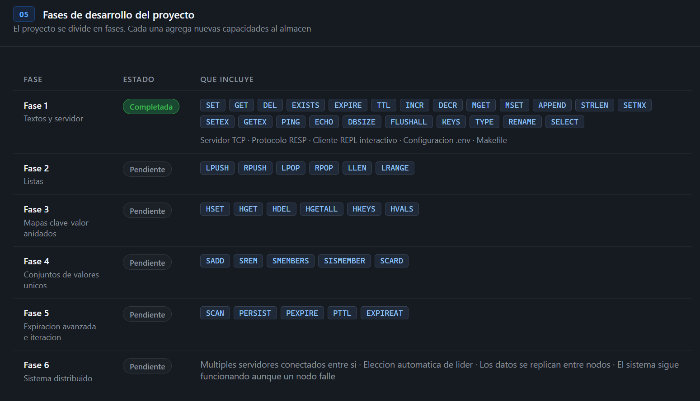

Roadmap
Plan de desarrollo de Velo: que esta listo y que viene despues.
Vision del proyecto
Velo nace como un ejercicio educativo de bajo nivel: construir desde cero, sin dependencias, un almacen de datos en memoria accesible por red con el protocolo RESP. El objetivo no es reemplazar soluciones de produccion, sino entender exactamente como funcionan por dentro: TCP, parsing binario, Clean Architecture, TTL, pub/sub, y eventual distribucion.
Fases de desarrollo

Fase 1 — Strings y Servidor Completada v0.1.0
La primera fase establece la base tecnica completa: protocolo, arquitectura, transporte y las operaciones mas fundamentales de cualquier almacen clave-valor.
net.createServer, limite configurable de conexiones, shutdown graceful con limpieza de sockets activos.Fase 2 — Listas Pendiente
Las listas son la estructura de datos mas versatil: colas, stacks, logs de actividad, historial de eventos.
Se implementaran como arrays de JavaScript vinculados a una KeyEntry con type: TipoDato.LIST.
| Comando | Descripcion |
|---|---|
LPUSH key val [val...] | Inserta uno o varios valores al inicio de la lista |
RPUSH key val [val...] | Inserta uno o varios valores al final de la lista |
LPOP key [count] | Extrae y devuelve elementos desde el inicio |
RPOP key [count] | Extrae y devuelve elementos desde el final |
LRANGE key start stop | Devuelve un rango de elementos (indices negativos desde el final) |
LLEN key | Devuelve la longitud de la lista |
LINDEX key index | Devuelve el elemento en la posicion indicada |
LSET key index val | Reemplaza el elemento en la posicion indicada |
LREM key count val | Elimina hasta count ocurrencias del valor |
Fase 3 — Hashes y Sets Pendiente
Hashes
Objetos de campo/valor almacenados como Map<string, string>. Utiles para representar entidades como usuarios o sesiones.
| Comando | Descripcion |
|---|---|
HSET key field value [field value...] | Establece uno o varios campos |
HGET key field | Devuelve el valor de un campo |
HDEL key field [field...] | Elimina campos |
HGETALL key | Devuelve todos los campos y valores |
HKEYS / HVALS key | Devuelve solo los campos o solo los valores |
HMSET / HMGET | Operaciones masivas (multiples campos) |
Sets
Colecciones de strings unicos sin orden. Implementados como Set<string> de JavaScript.
| Comando | Descripcion |
|---|---|
SADD key member [member...] | Agrega miembros al set |
SREM key member [member...] | Elimina miembros |
SMEMBERS key | Devuelve todos los miembros |
SCARD key | Devuelve el numero de miembros |
SISMEMBER key member | Devuelve 1 si el miembro existe |
SINTER / SUNION / SDIFF | Interseccion, union y diferencia de sets |
Fase 4 — Persistencia Pendiente
Sin persistencia, todos los datos mueren con el proceso. Hay dos estrategias clasicas:
fs.createWriteStream y fs.createReadStream nativos.
Sin dependencias externas.
Fase 5 — Pub/Sub Pendiente
El sistema de publicacion y suscripcion permite que los clientes reciban mensajes en tiempo real sin hacer polling. Ideal para notificaciones, colas de eventos y comunicacion entre servicios.
| Comando | Descripcion |
|---|---|
SUBSCRIBE canal [canal...] | Suscribe al cliente a uno o varios canales |
UNSUBSCRIBE [canal...] | Cancela la suscripcion (todos los canales si no se especifica) |
PUBLISH canal mensaje | Envia un mensaje a todos los suscriptores del canal |
PUBSUB CHANNELS [patron] | Lista los canales activos (con suscriptores) |
PUBSUB NUMSUB [canal...] | Devuelve el numero de suscriptores por canal |
La implementacion usara un PubSubBroker como singleton que mantiene un
Map<canal, Set<socket>>. Cuando llega un PUBLISH, el broker itera el Set y escribe
a cada socket activo.
Fase 6 — Cluster Pendiente
La fase final introduce distribucion real: multiples nodos, tolerancia a fallos y escalabilidad horizontal.
Como agregar un nuevo comando
Agregar un comando en Velo es un proceso de 3 pasos. La arquitectura asegura que cada paso sea aislado y no afecte al resto del sistema.
execute(store, args, db). El archivo va en
src/application/usecases/phaseX/categoria/NombreCommand.js.
import { RespSerializer } from '../../../infrastructure/protocol/RespSerializer.js'; import { KeyEntry, TipoDato } from '../../../domain/entities/KeyEntry.js'; export class LpushCommand { /** @type {string} */ nombre = 'LPUSH'; /** * Inserta valores al inicio de una lista. * @param {import('../../../domain/ports/IDataStore.js').IDataStore} store * @param {string[]} args * @param {number} db */ execute(store, args, db) { if (args.length < 2) { return RespSerializer.error('ERR wrong number of arguments for LPUSH'); } const [clave, ...valores] = args; let entrada = store.get(db, clave); if (!entrada) { entrada = new KeyEntry([], TipoDato.LIST); } else if (entrada.type !== TipoDato.LIST) { return RespSerializer.error('WRONGTYPE Operation against a key holding the wrong kind of value'); } // LPUSH inserta al inicio (unshift) entrada.value.unshift(...valores.reverse()); store.set(db, clave, entrada); return RespSerializer.integer(entrada.value.length); } }
src/application/CommandRegistry.js e importa y registra la nueva clase.
import { LpushCommand } from './usecases/phase2/lists/LpushCommand.js'; export class CommandRegistry { constructor() { this._handlers = new Map(); this._registrar(); } _registrar() { // ... comandos existentes ... // Fase 2 — Listas const listaComandos = [new LpushCommand()]; for (const cmd of listaComandos) { this._handlers.set(cmd.nombre.toUpperCase(), cmd); } } }
make server y el cliente con make client.
El nuevo comando ya esta disponible de inmediato.
velo[0]> LPUSH tareas "leer docs" "escribir tests" "hacer PR" :3 velo[0]> LRANGE tareas 0 -1 1) "hacer PR" 2) "escribir tests" 3) "leer docs"
make dev
que arranca con la bandera --watch de Node.js para recarga automatica.
Convenciones del proyecto
| Regla | Descripcion |
|---|---|
| Sin dependencias | Solo modulos nativos de Node.js. No se permite ningun paquete en dependencies. |
| ESM puro | Todos los archivos usan import/export. No CommonJS (require). |
| Comentarios en espanol | Todos los comentarios de codigo y logs se escriben en espanol sin tildes ni caracteres especiales. |
| Un comando = un archivo | Cada comando es su propia clase en su propio archivo. Nunca se agrupan multiples comandos. |
| Sin logica en infraestructura | Los archivos de infrastructure/ no contienen logica de negocio. Solo transporte y serialización. |
| Errores RESP siempre | Cualquier error en un comando se devuelve como RespSerializer.error('ERR ...'). Nunca se lanza una excepcion no capturada al cliente. |
| Node.js >= 20 | Se requiere Node 20+ para ESM estable. Se recomienda Node 22 para la sintaxis import ... with { type: 'json' }. |